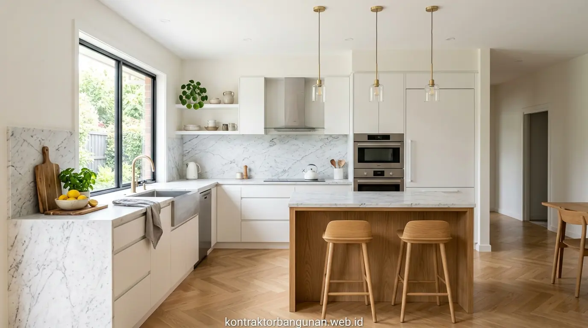

Mengenal Konsep Renovasi Total dan Renovasi Bertahap
Memiliki rumah yang nyaman, modern, dan berfungsi optimal merupakan impian setiap keluarga. Namun seiring berjalannya waktu, kondisi fisik rumah dapat mengalami penurunan mutu—mulai dari atap bocor, dinding lembap, hingga kebutuhan penambahan kamar tidur untuk anak.
Saat hendak melakukan perbaikan, pemilik hunian selalu dihadapkan pada satu pertanyaan mendasar: apakah sebaiknya melakukan renovasi rumah total sekaligus atau renovasi secara bertahap?
Kedua metode ini memiliki keunggulan dan tantangan tersendiri yang sangat bergantung pada kondisi finansial, kondisi bangunan eksisting, serta target waktu Anda.
- Renovasi Total: Pembongkaran dan perbaikan rumah secara menyeluruh dalam satu periode waktu kerja tertutup.
- Renovasi Bertahap: Pembagian proyek menjadi beberapa fase terpisah (misalnya: Fase 1 Atap & Struktur, Fase 2 Dinding & Keramik, Fase 3 Interior).
Tabel Komparatif: Renovasi Total vs Bertahap
Berikut adalah gambaran ringkas perbandingan teknis antara renovasi rumah total dan bertahap:
| Faktor Pembanding | Renovasi Rumah Total | Renovasi Rumah Bertahap |
|---|---|---|
| Efisiensi Biaya Total | Lebih murah (hemat 15–25% karena borongan skala besar). | Lebih mahal secara kumulatif akibat biaya kirim material & upah berulang. |
| Durasi Pengerjaan | Cepat & Tepat (3–6 bulan selesai). | Panjang & Berkesinambungan (bisa bertahun-tahun). |
| Kenyamanan Penghuni | Harus sewa tempat tinggal sementara selama proyek. | Dapat tetap menghuni rumah (namun terganggu debu & bising). |
| Risiko Overbudget | Terukur & Terkunci dalam dokumen RAB Kontraktor. | Tinggi akibat kenaikan harga material di tiap fase. |
| Keharmonisan Desain | Sangat konsisten & rapi sesuai desain master plan. | Berisiko belang atau kurang serasi jika beda tukang/masa. |

Diskusi Rencana Anggaran Biaya (RAB) bersama tim kontraktor profesional memastikan efisiensi anggaran renovasi total maupun bertahap.
Analisis Kelebihan dan Kekurangan Masing-Masing Metode
1. Keunggulan & Tantangan Renovasi Total
Renovasi total sangat ideal bagi pemilik rumah yang menginginkan perubahan drastis pada fasad depan, tata ruang interior, atau peningkatan menjadi rumah 2 lantai. Keunggulan utamanya terletak pada efisiensi waktu kerja dan penguncian harga material di awal. Namun, tantangannya adalah Anda wajib menyiapkan dana tunai sekaligus serta anggaran sewa rumah sementara.
2. Keunggulan & Tantangan Renovasi Bertahap
Sebaliknya, renovasi bertahap tidak menuntut modal awal yang besar sekaligus. Anda dapat mengerjakan area kamar mandi atau dapur terlebih dahulu sesuai dana tunai yang terkumpul. Namun tantangannya adalah rumah akan selalu berada dalam kondisi "setengah jadi", debu debu konstruksi dapat mengganggu kesehatan keluarga, serta risiko kesalahan pembongkaran pipa/kabel di masa mendatang.
Panduan Menyusun Skala Prioritas Renovasi Bertahap
Jika Anda memutuskan memilih renovasi bertahap karena keterbatasan anggaran, pastikan Anda membaginya ke dalam skala prioritas berikut agar tidak terjadi bongkar-pasang ulang:
- Tahap 1 (Struktur & Atap): Perbaikan kebojoran atap, perkuatan pondasi, dan perbaikan jaringan perpipaan/kelistrikan yang tertanam di dalam dinding.
- Tahap 2 (Area Fungsional): Perbaikan kamar mandi utama, area dapur, dan ruang tidur agar kebutuhan hidup harian tidak terganggu.
- Tahap 3 (Dinding & Keramik): Penggantian ubin keramik lantai, pemasangan partisi dinding baru, dan pengecatan dasar.
- Tahap 4 (Finishing & Interior): Pemasangan fasad eksterior, kanopi car port, pencahayaan dekoratif, dan perabotan *built-in*.
- Selalu minta tim arsitek/kontraktor untuk membuatkan Master Plan Gambar Kerja Lengkap dari awal, meskipun pengerjaannya dilakukan secara bertahap dalam kurun 2-3 tahun.
Pertanyaan Populer Seputar Renovasi Rumah
Kesimpulan Praktis
Memilih antara renovasi rumah total vs bertahap bergantung pada ketersediaan dana dan kebutuhan hunian Anda. Jika Anda ingin hasil cepat, hemat kumulatif, dan rapi, renovasi total adalah juaranya. Namun jika modal terbatas, renovasi bertahap berpedoman master plan adalah opsi terbaik. Konsultasikan rencana renovasi rumah Anda bersama kontraktor profesional kami.